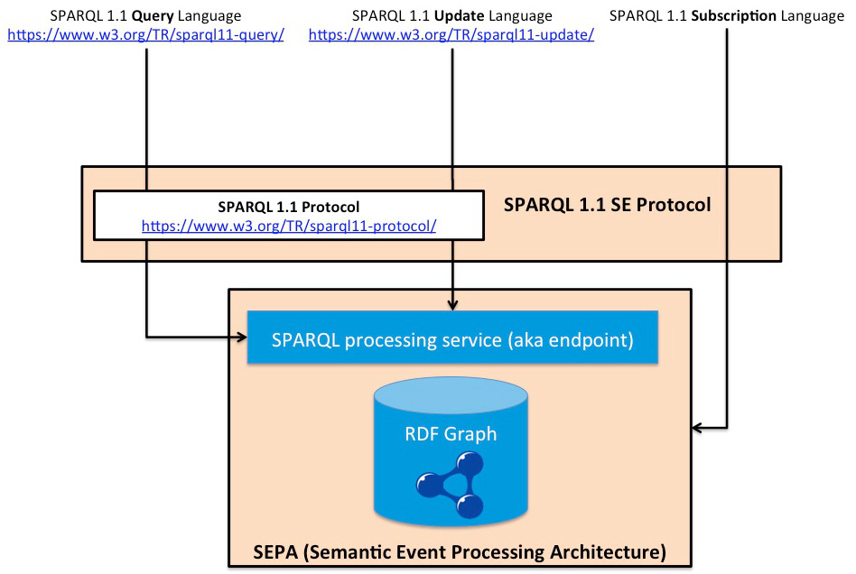

The SPARQL 1.1 SE Protocol is proposed as an extension of the SPARQL 1.1 Protocol [[sparql-11-protocol]]. It is intended to be used in dynamic contexts where detecting events is critical. In such contexts, the use of SPARQL queries MAY be inefficient and MAY not guarantee to detect all the events because of their asynchronous nature. Moreover, the SPARQL 1.1 SE protocol is built around a security layer (e.g.,TLS) in order to be applied in environments where the security MUST be supported (e.g., the Internet of Things). The SPARQL 1.1 SE Protocol extends the SPARQL 1.1 Protocol [[sparql-11-protocol]] by adding two primitives: subscribe and unsubscribe. The SPARQL 1.1 Protocol is framed within the W3C Recommendations as shown in the following figure.
A SAP file MUST be a JSON document compliant with RFC 7159 [[!RFC7159]].
The section named "parameters" defines all the
parameters needed to interact with an instance of the Semantic
Event Processing Architecture (SEPA). In this section are
defined parameters for the interaction with the HTTP interface
(destined to SPARQL updates and SPARQL queries) and for the
Websocket interface (needed for the SPARQL subscriptions).
The value for the key "parameters" is a JSON
object: its keys and values are specified in the next
subsections.
In order to connect to the HTTP interface of a SEPA the host,
the ports (one for a secure connection, the other for an
unsecure one) and the path to be appended must be known. Then
the JSON object passed to the "parameters" key
contains the keys "host" (without the
leading http:// or https://), the
keys "updatePort" and "updateSecurePort"
and "path". Values of "updatePort"
and "updateSecurePort" are numbers as defined in
RFC7159 [[!RFC7159]].
Subscriptions play a crucial role in real-time
applications. SEPA platform supports using the SPARQL Query
[[rdf-sparql-query]] language to subscribe to
events. Subscriptions use the websocket interface of SEPA
platform. In order to configure access to websocket interface
the ports for unsecure and secure connection must be specified
as numbers to the keys "subscribePort"
and "subscribeSecurePort".
An example of this configuration section is reported below:
"parameters" : {
"host":"my.sepa.host.com",
"path":"/sparql",
"updateSecurePort":8443,
"updatePort":8000,
"subscribeSecurePort":9443,
"subscribePort":9000
}
A SAP file SHOULD contain all of the above-mentioned keys.
In a SAP file namespaces can be defined. Client-side APIs will
take the namespaces and prepend them to a SPARQL
update/query/subscription. In a SAP file namespaces are
specified as a JSON object assigned to the
key "namespaces". In this object every key
represents a prefix, while the value is the relative
namespace.
In the following example the well known rdf
and rdfs prefixes are defined in the SAP file:
"namespaces" : {
"rdf":"http://www.w3.org/1999/02/22-rdf-syntax-ns#",
"rdfs":"http://www.w3.org/2000/01/rdf-schema#"
}
A SAP file includes a list of the SPARQL updates (see
[[RDF-SPARQL-UPDATE]]) performed by the application. The
updates MUST be specified as a JSON object passed to
the "updates" key. In this object every key
represent the friendly name of the SPARQL update. The value is
a JSON object in which the main key is
named "sparql" and contains the SPARQL code.
The following example shows the definition of a very basic
SPARQL update named INSERT_PERSON:
"updates" : {
"INSERT_PERSON" : { "sparql":"INSERT DATA { <http://ns#Person1> rdf:type foaf:Person }" }
}
In a SPARQL update containing literals, quotes MUST be
escaped.
The usefulness of a SAP profile consists in the ability to
create templates for SPARQL updates that can be fetched by the
application and modified at run-time to fit the actual
need. For example a producer that updates the value of a
temperature sensor will only need to fill a field in the
template. Here is where the definition of forced bindings
comes in help. A forced binding enables the developer to
substitute a variable in a template with a custom value. To
define forced bindings for a SPARQL update, the
key "forcedBindings" MUST be used. The value is a
JSON object. The variable of a forced binding is a key in that
JSON object. Its value is again a JSON object containing the
keys "type"
and "value". "type" MUST be one
of "uri", "bnode", "literal".
Now that forced bindings have been defined, we can write an example of SPARQL update template. In the following example
"ADD_PERSON":{
"sparql":"INSERT DATA { ?person rdf:type iot:Person . ?person iot:hasName ?name }",
"forcedBindings": {
"person" : {"type":"uri", "value":""},
"name" : {"type":"literal", "value":""}
}
}
Queries and persistent queries, named subscriptions, MUST be
defined in accord to SPARQL Query Language
[[rdf-sparql-query]]. While a SPARQL query MUST be sent over
HTTP (or HTTPS), a SPARQL subscription MUST be issued over
Websocket (secure or unsecure). Both queries and
subscriptio-ns are defined using the "subscribes"
key of the main JSON object. As for SPARQL updates, each
query/subscription has a friendly name, which is a key in the
JSON object assigned to the key "subscribes".
The JSON object describing a query/subscription MUST contain
the "sparql" key.
In the following example a very
simple "subscribe" section is presented. Only a
SPARQL query/subscription related to the whole knowledge-base
is present. No forced bindings are defined.
"subscribes" : {
"EVERYTHING" : {
"sparql" : "SELECT ?s ?p ?o WHERE { ?s ?p ?o }"
}
}
The JSON object of a SPARQL query/subscription MAY contain the
keys "forcedBindings". In that case the value
of "forcedBindings" is a JSON object that MUST
contain the keys "type" and "value".
The following example shows a template for a SPARQL
query/subscription containing forced bindings.
"subscribes" : {
"tempSensor" : {
"sparql" : "SELECT ?temp WHERE { ?tempSens rdf:type iot:TempSensor . ?tempSens iot:hasValue ?temp }",
"forcedBindings" : {
"temp": {"type":"uri", "value":""}
}
}
}
{
"parameters" : { "path":"sparql",
"subscribeSecurePort":9443, "subscribePort":9000,
"updateSecurePort":8443, "updatePort":8000,
"host":"my.sepa.host.com"},
"namespaces" : { "iot":"http://www.arces.unibo.it/iot#",
"rdf":"http://www.w3.org/1999/02/22-rdf-syntax-ns#"},
"updates": {
"ADD_PERSON":{
"sparql":"INSERT DATA { ?person rdf:type iot:Person . ?person iot:hasName ?name }",
"forcedBindings": {
"person" : {"type":"uri", "value":""},
"name" : {"type":"literal", "value":""}}}
},
"subscribes": {
"CLASS_INSTANCES":{
"sparql":"SELECT ?s WHERE { ?s rdf:type ?class }",
"forcedBindings": {
"class" : {"type":"uri", "value":""}}},
"EVERYTHING":{
"sparql":"SELECT ?s ?p ?o WHERE { ?s ?p ?o }"}
}
}
Authors would like to thanks the Advanced Research Center on Electronic Systems (ARCES) of the University of Bologna.